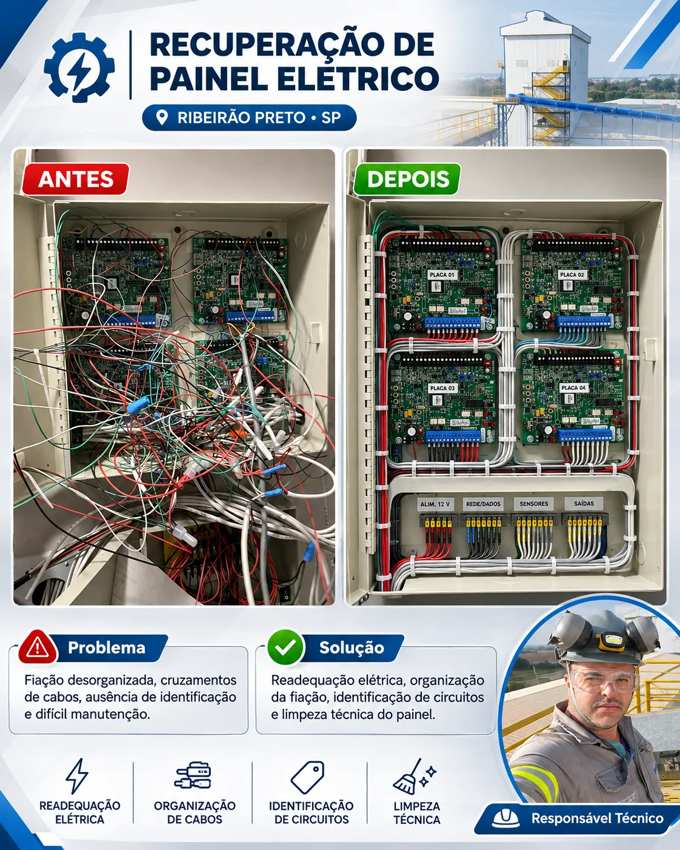
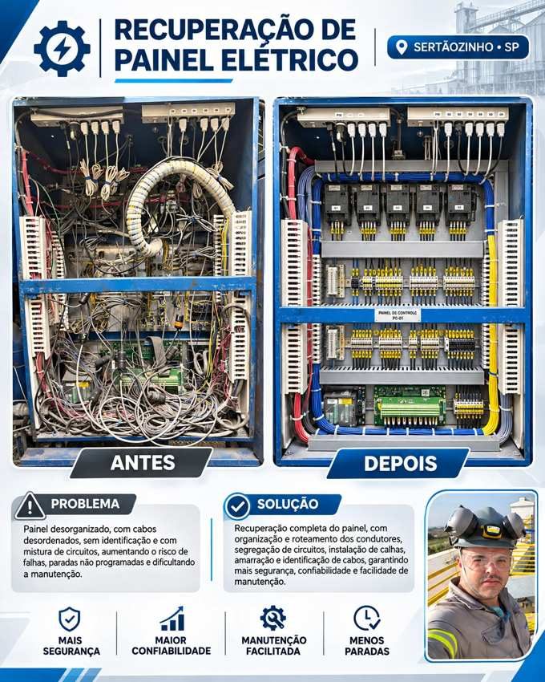
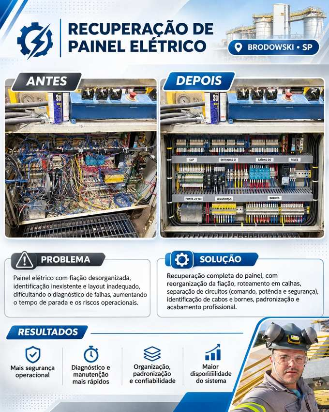
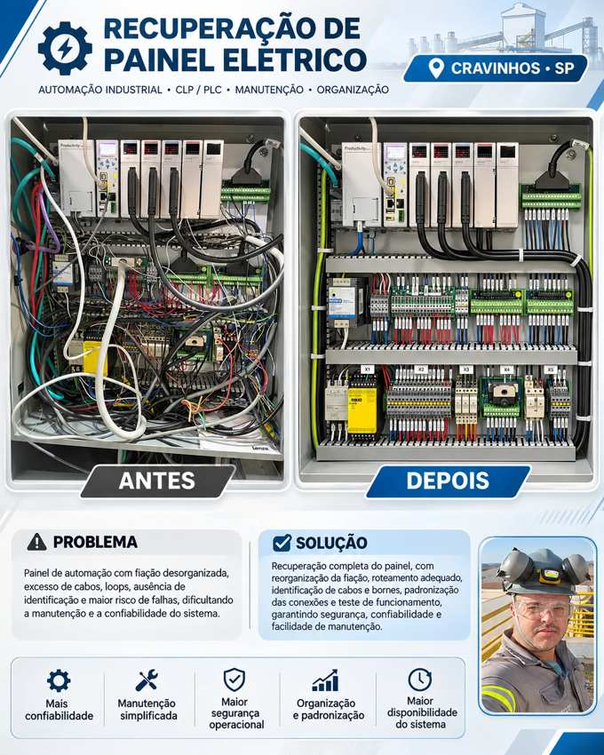
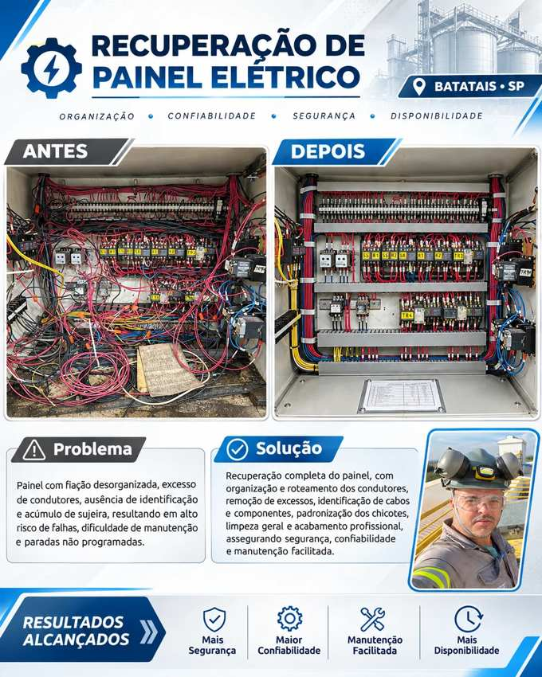
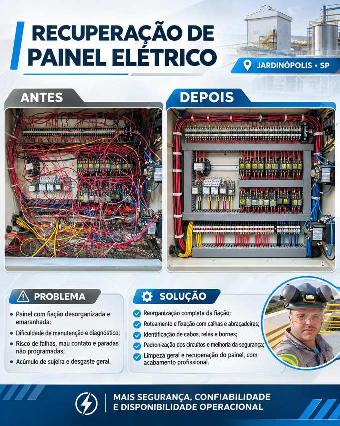
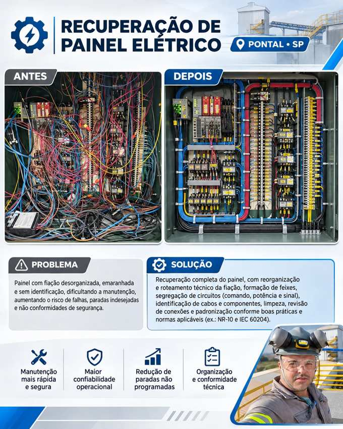
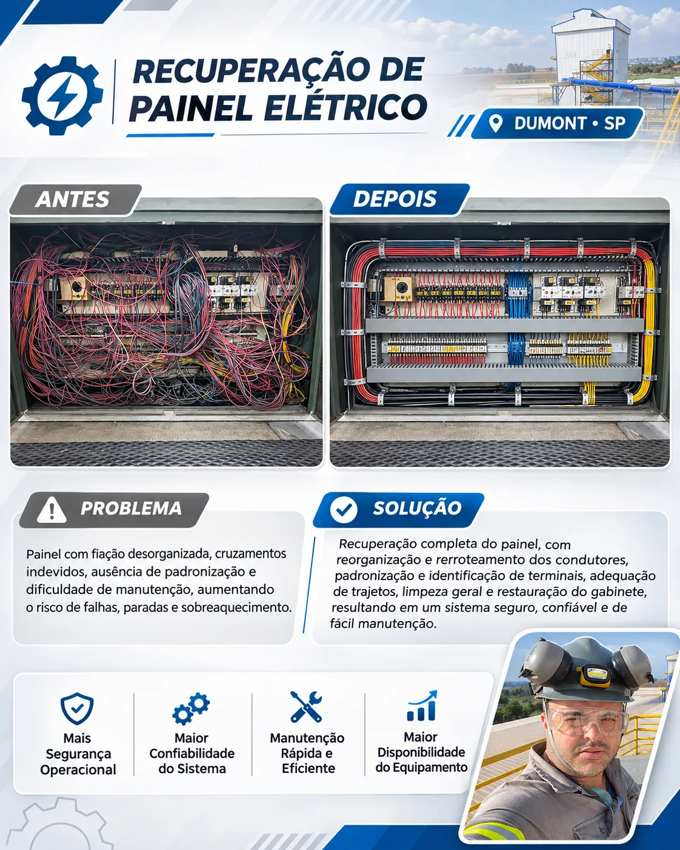

Ribeirão Preto · SP
Portfólio de painéis elétricos, automação industrial e eletrônica.

Estrutura dedicada à análise, diagnóstico e reparação de circuitos e placas eletrônicas, com bancada técnica e instrumentos de medição.







